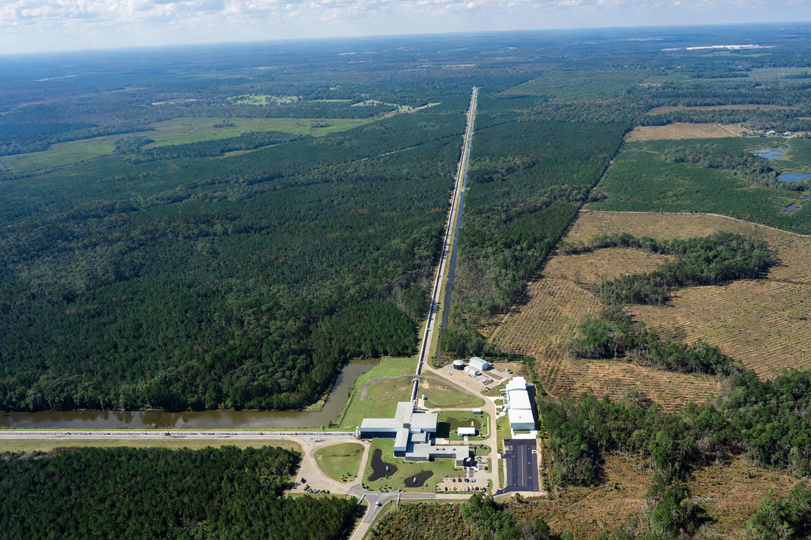

LIGO
| Full name | Laser Interferometer Gravitational-Wave Observatory |
|---|---|
| Locations | Hanford, Washington; Livingston, Louisiana |
| Arm length | 4 km |
| First detection | GW150914, 14 September 2015 |

[Image: Aerial photograph of a LIGO detector: two 4 km arms meeting at a corner building]The Laser Interferometer Gravitational-Wave Observatory (LIGO) is a large-scale physics experiment and observatory designed to detect cosmic gravitational waves. Founded in 1992 by Kip Thorne and Ronald Drever of Caltech and Rainer Weiss of MIT, LIGO consists of two widely separated interferometers — at Hanford, Washington, and Livingston, Louisiana — operated in unison.
On 14 September 2015 the two detectors made the first direct observation of gravitational waves, from the merger of two black holes 1.3 billion light-years away (event GW150914). Rainer Weiss, Kip Thorne and Barry Barish shared the 2017 Nobel Prize in Physics. Working with Virgo (and later KAGRA), LIGO's observing runs have catalogued hundreds of compact-object mergers.
How it works
Each detector is a Michelson interferometer with 4 km Fabry–Pérot arms. A passing gravitational wave changes the relative arm lengths by a fraction of an atomic nucleus (strains of ~10⁻²¹); the interference pattern of the laser light registers the difference. Using two distant sites allows coincidence checks against local noise, and adding Virgo and KAGRA improves sky localisation of sources. Seismic isolation, ultra-high vacuum (the largest vacuum volumes in the world) and 'squeezed light' quantum techniques push sensitivity ever further.
Detections
Highlights include GW150914 (the first binary black hole merger), GW170817 (the first binary neutron star merger, observed across the electromagnetic spectrum and a landmark of multi-messenger astronomy), and events revealing black holes in the 'mass gap', highly asymmetric mergers, and intermediate-mass black holes. The LIGO–Virgo–KAGRA catalogues are the empirical foundation of the new field of gravitational-wave astronomy.